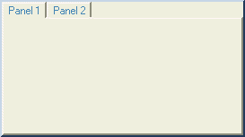
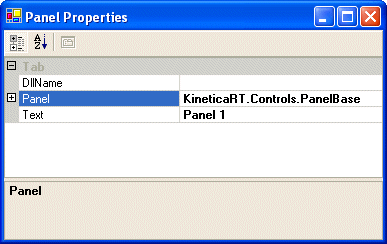

KineticaRT Studio panels can be added, created and removed from windows using the Advanced Properties menu, see Configuring Windows , and provide a place to display data and accept user input.

There can be any number of panels in a KineticaRT Window and panels can be shared between windows.
Each panel contains an number of controls for data display and user input.
See Configuring Controls for details on how to configure the controls in the panels.
Each panel may also contain a number of components. These are objects which do not have a display and do not accept user input. They are normally placed on the panel because they interact with the controls on the panel. For example the ButonInterlock component does not have a display but monitors a group of buttons and when one is pressed, it releases the others.
See Configuring Components for details on how to configure the components on the panels.
Note that components which interact with the channels rather than display components should not be placed on the panels. They should either be in the channels or declared in a sequence so that if a panel is removed from the display or placed in more than one window then the component will not also be removed/duplicated.
After added a panel to the Window, it can be configured by right clicking either on the tabs at the top of the panel or on an empty area of the panel and selecting Enter Edit Mode, then right clicking again and selecting Properties. The rest of the options on the right click menu are for configuring the controls on the panel.
This displays the Panel Properties editor as follows:

The DllName and Text properties are stored in the Window file and all the properties under Panel are stored in the Panel (DllName) file.
Most of the properties under Panel can normally be left at their default values.
The color and font properties set the default colors / font for all the controls in the panel. Setting these values instead of setting the same properties on each control makes it far easier to change the color scheme / font for the panel in future however if they are not set then they will inherit the default values from the Window allowing all panels in the window to be changed by setting the window color/font properties.